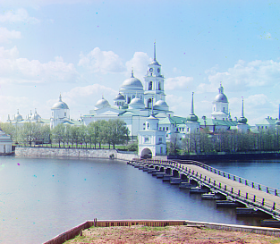

About Me
I'm Leia (like the princess) — an AI founder building at the intersection of healthcare and spiritual tech. I grew up in Lima, Peru and study Computer Science & Economics at UC Berkeley.
Part 1: Align Function
Monastery (PNG)
Reflection
I crop ~10% off all sides before scoring to suppress plate borders/labels that bias NCC.
I search a local window (±15 px) and pick the displacement with the highest NCC.
Using R as the reference yields sharper edges and fewer color fringes than using B.
Method: single-scale NCC; border crop ≈ 10%.
Pyramid Function
Self-portrait (PNG preview)

Note: Original input is images/self_portrait.tif. Browsers don’t display TIF reliably, so I exported a PNG for the site.
Reflection
A naive pyramid with np.resize tiled the image. I switched to proper resampling
(skimage.transform.rescale with anti-aliasing) and used NCC (optionally on Sobel edges)
across ~6–7 levels. After the coarse shift, a small ±3–4 px refine plus a final 10–14% crop removes residual color borders.
Method: pyramid NCC (~6–7 levels), anti-aliased resampling; optional Sobel-NCC; crop ≈ 10–14%.
Submission (very short)
Gradescope zip: code/ (main.py or .ipynb + README) and web/page.pdf.
Share this page link via the class Google Form. From Project 2, also submit the website PDF to the separate “website pdf ONLY” assignment and tag problems.